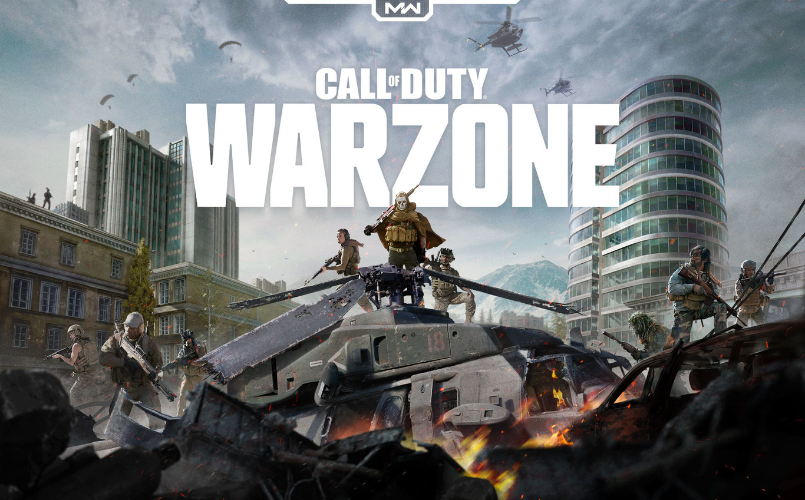
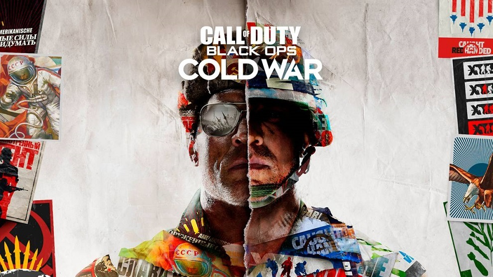
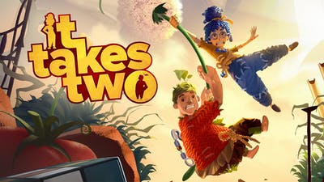
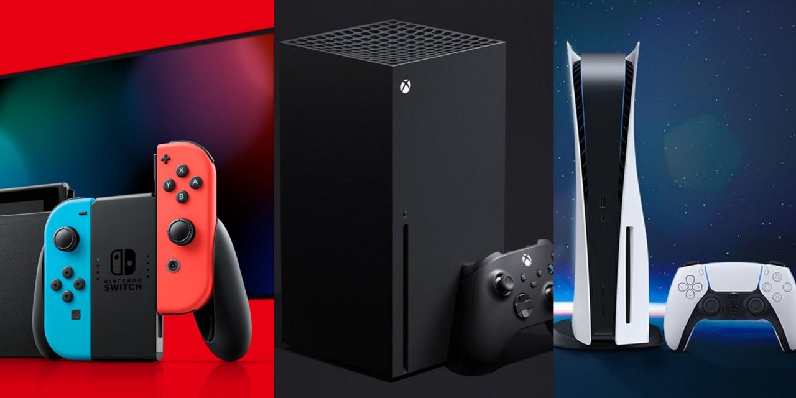

Fortnite

Fortnite es un juego gratuito en línea y multiplataforma, que se encuentra en PC, Nintendo Switch, Xbox, Play Station y Android y pueden jugar entre sí, es un juego donde 100 jugadores se enfrentan con distintas variaciones de armas para llegar al final y obtener la victoria magistral.
Existen diferentes modos para jugar con tus amigos, como el modo creativo, modos por tiempo limitado, salvar al mundo, arena entre otros.
Apex

Apex Legends es un juego gratuito en línea y multiplataforma para PC, Xbox, Play Station y Nintendo Switch, en este juego existen diferentes leyendas donde forman equipos de 2 o 3 y se unen a la lucha por ser los grandes campiones de Apex.
Call of Duty: Warzone

Call of Dutty: Warzone es un juego gratuito en línea, es multijugador y multiplataforma, se encuentra en PC, Xbox y Play Station, es un juego donde 150 jugadores se enfrentan ya sea en solitario, duos o escuadrones, existen diferentes armas y debes de elegir las que creas que son mejores para que tu y tu equipo logren ser rescatados por Warzone, y recuerda que si mueres tienes acceso una vez al Gulag, si ganas reapareces pero si pierdes ya no reapareceras a menos que paguen tu rescate.
Among Us

Among us es un un juego multijugador y multiplataforma de paga para PC, gratuito para celular y proximamente para consolas que consiste en que 10 personas se encuentran en una nave, pero algunos de ellos son en realidad impostores y ellos tienen que eliminar a los demás asesinándolos o saboteándolos para conseguir ganar, pero los demás tienen que hacer diferentes tareas para poner en funcionamiento la nave y escapar, al igual de que hay reuniones donde se decide si eyectar a alguien de la nave o no.
Videojuegos populares recientes
Call of Duty: Black Ops Cold War

Call of Duty: Black Ops Cold War es un juego de paga en línea multijugador y multiplataforma que se encuentra en PC, Xbox y Play Station, este juego contiene una campaña en solitario, el modo de juego de zombies con amigos y el multijugador que tiene diversos y divertidos modos de juego.
Fall Guys: Ultimate Knockout

Fall Guys: Ultimate Knockout es un juego multijugador y multiplataforma de paga que se está expandiendo pero por lo pronto está disponible en Play Station, PC y Nintendo Switch, en este juego hay diferentes modos y vas individualmente pasando diferentes obstáculos y juegos para poder ganar y obtener la corona.
It Takes Two

Este juego de paga es multijugador para PC, Xbox y Play Station, este juego es de 2 jugadores y cuenta una gran, interactiva y divertida historia, donde se tienen que pasar diversos niveles para poder completar el juego.
